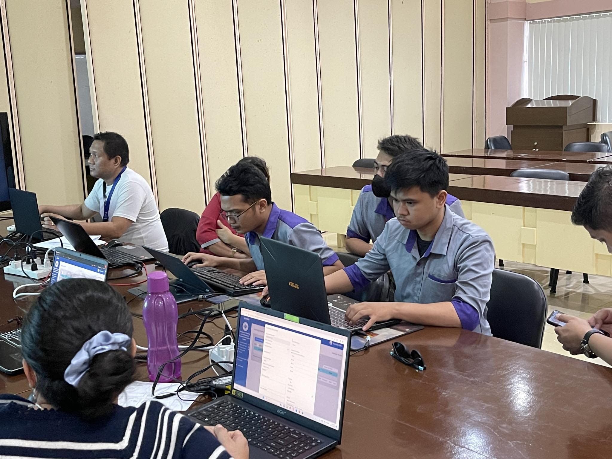
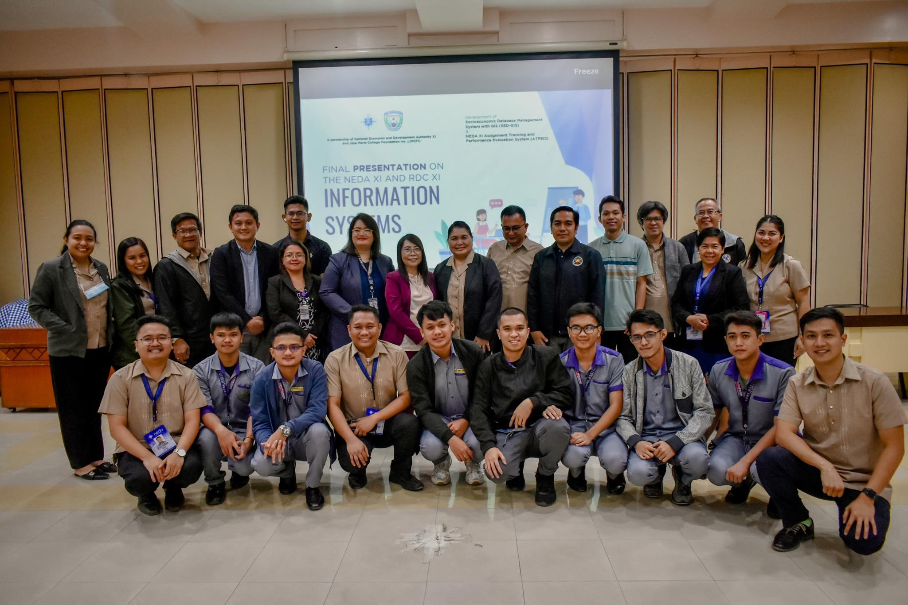

about me
22 YEARS OLD

OCTOBER 28,2000

Purok-2 cabacungan Nabunturan Davao de Oro

jonathan.gumapac@jmc.edu.ph

09296672655

Who am I and who I want to become?
I am a passionate web developer who loves creating dynamic and engaging websites that can enhance the user experience. My ultimate goal is to become a highly skilled and sought-after web developer who can deliver innovative solutions to clients.
As a web developer, I possess a wide range of technical and soft skills, including proficiency in HTML, CSS, JavaScript, and other web development technologies. I am also adept at problem-solving, critical thinking, and communication, which are crucial for collaborating with team members and delivering high-quality projects.
Whom do I want to surround myself with?
I want to surround myself with individuals who are passionate about web development and are willing to share their knowledge and expertise. I also value collaboration and believe that working with like-minded individuals can lead to greater creativity, productivity, and success.
What goals do I want to reach?
My primary goal as a web developer is to continuously improve my skills and knowledge, stay up-to- date with the latest web development trends and technologies, and deliver high-quality solutions that exceed client expectations. I also want to build a portfolio of successful projects that showcase my expertise and creativity.
Which companies do I want to work for?
As a web developer, I am interested in working for companies that value innovation, creativity, and collaboration. Some of the companies that align with my interests and values include Google, Apple, Amazon, and Facebook, as well as smaller startups and agencies that specialize in web development.
What type of job do I want to do?
As a web developer, I am interested in a variety of job roles, including front-end developer, back-end developer, full-stack developer, and web designer. I am also open to freelance and remote work opportunities that offer flexibility and the chance to work on a diverse range of projects. My ultimate goal is to become a versatile and skilled web developer who can excel in any role and deliver exceptional results.
THE IT PROFESSION
Who am I and who I want to become?
I am a passionate web developer who loves creating dynamic and engaging websites that can enhance the user experience. My ultimate goal is to become a highly skilled and sought-after web developer who can deliver innovative solutions to clients.
What is an IT profession for you?
An IT profession is a specialized field focused on technology, encompassing roles like software development, network administration, cybersecurity, and more. It involves leveraging technical expertise to solve problems, optimize processes, and support organizations in utilizing technology effectively.
Why do you think that my course is one of the most high-demand in the society?
IT is in high demand due to its essential role in modern society. Businesses rely on technology for their operations, security, and growth. Additionally, the digital transformation across industries creates a need for skilled IT professionals who can develop, manage, and secure complex systems, leading to a constant demand for IT expertise.
Why do you choose BSIT course?
I choose a Bachelor of Science in Information Technology (BSIT) course to develop a strong foundation in technology, gain versatile skills, pursue a career in the IT industry, and contribute to the advancement of technology-driven solutions.
What will you become after finishing my course?
After completing an IT course, I will have various career options depending on my specialization and interests. I could become a software developer, designing and coding applications. Network administrators ensure smooth network operations, while cybersecurity professionals protect systems from threats. Database administrators manage and secure data. Systems analysts analyze organizational processes and design technology solutions. IT consultants provide expert advice and guidance. Technical support specialists assist users with technology issues. With the continuous growth of technology, completing an IT course opens doors to a wide range of high-demand and rewarding career paths where you can contribute to the ever-evolving world of technology.
Describe a good IT professional.
A good IT professional possesses a diverse skill set and exhibits certain qualities. They have a strong technical foundation, staying updated with the latest trends and advancements in the IT industry. They are problem solvers, tackling complex issues with analytical thinking and creativity. Good IT professionals are excellent communicators, able to convey technical concepts to non-technical stakeholders effectively. They are adaptable and open to learning, as technology evolves rapidly. They value teamwork, collaborating with colleagues to achieve common goals. Integrity is crucial, as they handle sensitive data and ensure information security. Ultimately, a good IT professional demonstrates a passion for technology, professionalism, and a commitment to continuous growth and improvement in their field.
On-the-Job Training Experience
On-the-job training, or OJT, is the process of learning and refining new abilities while carrying out the tasks of the actual work. This kind of training incorporates practical application and direction from knowledgeable coworkers or superiors in a genuine work environment. During OJT, students get hands-on training, direction, and criticism as they carry out their job responsibilities. The demands of the task and the learner's preferred learning style are often considered when designing this kind of training. OJT might involve undertaking assignments like following a more seasoned worker about, practicing activities under close supervision, or working on a project under the supervision of a mentor.
On-the-job training, or OJT, is the process of learning and refining new abilities while carrying out the tasks of the actual work. This kind of training incorporates practical application and direction from knowledgeable coworkers or superiors in a genuine work environment. During OJT, students get hands-on training, direction, and criticism as they carry out their job responsibilities. The demands of the task and the learner's preferred learning style are often considered when designing this kind of training. OJT might involve undertaking assignments like following a more seasoned worker about, practicing activities under close supervision, or working on a project under the supervision of a mentor.
Describe the job or duties.
As a programmer support and front-end developer, my job encompasses two essential responsibilities. Firstly, as a programmer support, I provide assistance and technical guidance to fellow developers, troubleshooting issues, and offering solutions to programming challenges. Icollaborate with the development team, addressing bugs, optimizing code, and ensuring the smooth operation of software applications.
Secondly, as a front-end developer, I specialize in creating the user-facing components of websites or applications. Using my expertise in HTML, CSS, and JavaScript, i design and develop visually appealing and responsive interfaces. i collaborate with designers and stakeholders to understand the design requirements, implementing them effectively and ensuring seamless user experiences across different devices and browsers.
MY duties involve translating design mockups into functional code, implementing interactive features, and optimizing website performance. I pay attention to details such as layout, typography, and visual elements to create aesthetically pleasing and user-friendly interfaces. Additionally, I integrate front-end components with back-end systems, ensuring smooth data flow and functionality.
As a programmer support and front-end developer, I stay up-to-date with the latest front-end technologies and best practices. This allows me to enhance my skills, improve development efficiency, and deliver high-quality user experiences. Effective communication and collaboration skills are crucial, as I work closely with designers, back-end developers, and other stakeholders, ensuring that project requirements are met and providing valuable input throughout the development process.
Overall, my role combines the technical support aspect of programming with the creative and interactive elements of front-end development, contributing to the successful implementation of software applications and delivering compelling user interfaces.
×
×
×

×
×
×

Vision
NEDA Region VI is the premier development coordinating agency with highly respected and competent professionals in planning, investment programming, monitoring and evaluation in a progressive Western Visayas
Mission
As members of the NEDA family and of this nation, We are committed to uphold the Constitution And the ideals of a nation united.
Ours is the task to formulate development plans And ensure that plan implementation Achieves the goals of national development.
In the performance of our mandate, We shall be guided by the principles Of private initiative and devolution of powers That greater people participation in the Development process may be achieved.
Guided by our faith in God and an inspired leadership, Our hallmarks as a development institution Shall be founded on unity and solidarity And on the integrity, professionalism and Excellence of each and every staff.
We shall be transparent in all our actions And continue to adhere to the highest Tenets of public ethics. For ours is a caring agency responsive To the needs of every member, While working for the welfare of all.
MY COMPETENCY SKILLS
×
×
×
×
A front-end developer is a professional who specializes in creating the user-facing components of websites and applications. They are responsible for designing and developing the visual elements and interactive features that users see and interact with directly. Front-end developers work closely with designers and back-end developers to ensure a seamless user experience and functional interface. Front-end developers primarily work with web technologies such as HTML, CSS, and JavaScript. They use HTML to structure the content of a webpage, CSS to style and format the elements, and JavaScript to add interactivity and dynamic behavior to the site. Front-end developers are skilled in creating responsive and mobile-friendly designs, optimizing page performance, and ensuring cross-browser compatibility. They pay attention to detail, ensuring that the user interface is visually appealing, intuitive, and user-friendly. They also work with frameworks and libraries such as Bootstrap, React, or Angular to streamline the development process and enhance productivity. Collaboration and effective communication skills are essential for front-end developers as they work closely with designers, back-end developers, and other stakeholders. They need to understand project requirements, provide input on technical feasibility, and work together to create cohesive and functional web experiences.
Thinking Skillss
Learning
My IT course likely involves acquiring new knowledge, skills, and understanding of various IT concepts, technologies, programming languages, or systems. Through coursework, assignments, projects, and hands-on experience, you can demonstrate my ability to learn and assimilate information effectively.
In my IT course, required to analyze and evaluate information, draw logical conclusions, and make connections between different IT concepts or theories. This could involve tasks such as debugging code, troubleshooting network issues, or identifying vulnerabilities in a system.
Creative Thinking
In IT, creative thinking often comes into play when you need to find innovative solutions to problems or develop new approaches to design and development. It involves thinking outside the box, exploring alternative strategies, and being open to unconventional ideas or technologies.
Decision Making
IT courses often present scenarios where you have to make decisions based on available information and constraints. This could involve selecting appropriate technologies for a project, deciding on the best software architecture, or choosing the most effective security measures for a system.
Problem Solving
Problem-solving is a fundamental skill in IT. my course is likely to provide opportunities to solve technical challenges, debug code, resolve system malfunctions, or develop solutions to meet specific requirements. Demonstrating effective problem-solving skills involves identifying the problem, breaking it down, formulating strategies, and implementing solutions.
To relate these competencies to my personal experience, reflect on my coursework, projects, internships, or any practical experience you have gained during my IT course. Consider how you have applied learning, reasoning, creative thinking, decision making, and problem-solving skills in various IT-related contexts and highlight specific examples to demonstrate my proficiency in these areas.
WORK EXPERIENCE
During my OJT (On-the-Job Training) experience as a front-end developer at NEDA XI, I gained valuable insights and hands-on experience in web development. I collaborated with the development team, actively participating in the creation and enhancement of user-facing components for websites and applications. Using my skills in HTML, CSS, and JavaScript, I translated design concepts into functional and visually appealing interfaces. Throughout my tenure, I worked closely with designers and stakeholders to understand project requirements and deliver optimal user experiences. I implemented responsive layouts, optimized page performance, and ensured cross-browser compatibility. Additionally, I incorporated interactive elements using JavaScript to enhance user engagement and functionality. During the OJT, I had the opportunity to contribute to real-world projects, sharpening my problem-solving skills and attention to detail. I actively participated in code reviews, learned to adhere to coding standards, and gained experience in version control systems. Working in the dynamic environment of NEDA XI exposed me to various challenges and allowed me to develop effective communication and collaboration skills. I learned to effectively manage deadlines and adapt to changing project requirements, all while maintaining a high level of professionalism and attention to quality. Overall, my work experience as an OJT student at NEDA XI as a front-end developer provided me with practical knowledge, enhanced my technical abilities, and strengthened my understanding of web development principles. It was a valuable opportunity to apply my skills in a real-world setting, paving the way for a successful career in the field of front-end development.